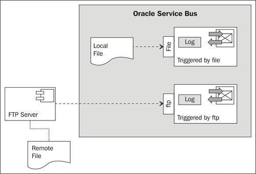
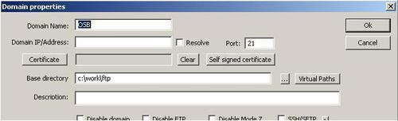
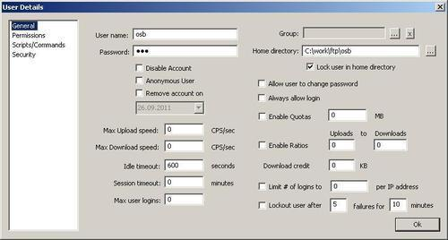
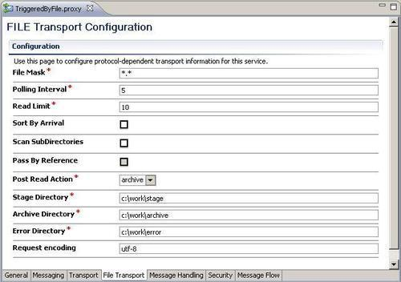
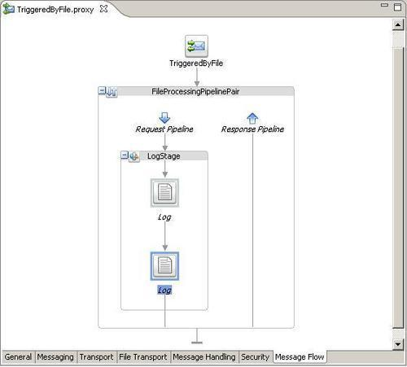
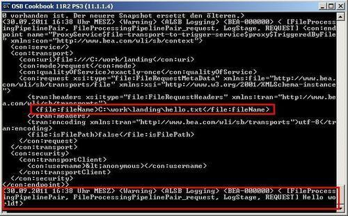
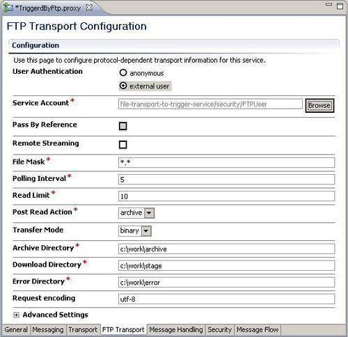
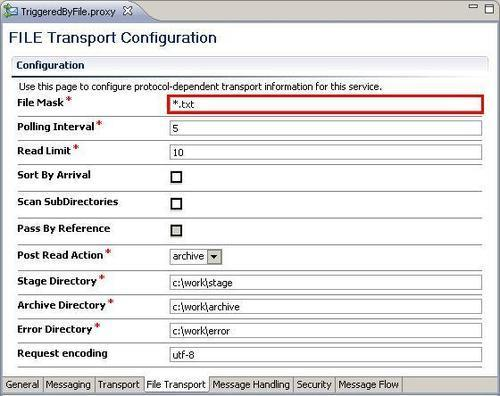

In this recipe, we will trigger a proxy service upon arrival of a file in a certain location. We will implement both, a proxy service listening on a folder in a local filesystem as well as one listening to a remote location via FTP.

In order to make working with the FTP example as simple as possible, we first install a simple local FTP server:
C:\work\ftp. OSB in the Domain Name field. localhost in the Domain IP/Address field. C:\work\ftp in the Base directory field.
osb in the User name field. osb in the Password field.
We begin with a proxy service listening on a local folder for new files. In Eclipse OEPE, perform the following steps:
using-file-transport-to-trigger-service and add a proxy folder to that new project. proxy folder, create a new proxy service named TriggeredByFile. file:///C:/work/landing into the Endpoint URI field. 5 into the Polling Interval field. C:\work\stage into the Stage Directory field, C:\work\archive into the Archive Directory field and C:\work\error into the Error Directory field.
FileProcessingPipelinePair. LogStage. $inbound as the log Expression and set the Severity to Warning. $body/text() as the log Expression and set the Severity to Warning.
Now our simple file polling service, implemented by a proxy service using the File Transport, is ready and can be tested.
Copy a text file into the folder C:\work\landing. Within five seconds, the file will disappear from that folder and two log messages, one with metadata from $inbound and one with the content of the file, are shown on the Service Bus console log window.

We have implemented a proxy service listening and process files arriving on a local folder. Now, let's implement a proxy service consuming files from a remote FTP location.
proxy folder create a new proxy service named TriggeredByFtp. ftp://localhost/ into the Endpoint URI field. 5 into the Polling Interval field. C:\work\archive into the Archive Directory field, C:\work\stage into the Download Directory field and C:\work\error into the Error Directory field.In order to access the FTP server, the proxy service needs to authenticate itself. To provide the credentials, we first need a Service Account, which can then be used on the proxy service.
security. security and choose New | Service Account. FTPUser into the File name field and click Finish. osb into the User Name field and osb into the Password and Confirm Password fields.The Service Account is now configured and ready to be used from our proxy service.

FileProcessingPipelinePair. LogStage. $inbound as the log Expression and set the Severity to Warning. $body/text() as the log Expression and set the Severity to Warning.Now our file polling service, implemented by a proxy service using the FTP Transport is ready and can be tested.
Copy a text file to the directory C:\work\ftp\osb. Within five seconds the file will disappear from that folder and two log messages, one with the metadata of $inbound and one with the content of the file, are shown on the Service Bus console log window.
Both transports, the File and the FTP Transport work similarly. The main difference is the file retrieval mechanism. Of course, polling through FTP is more costly than polling on the local filesystem using the File Transport. Take that into account when defining the polling frequency.
If the transport discovers a new file in polling location, then the file is copied into the staging directory. The file remains in there until the execution of the proxy service is finished. The absolute path of the processed file is available within the message flow through the $inbound variable.
If the proxy service finishes with an uncaught error, the file is moved to the error folder. If the proxy service terminates without an error, the file is moved to the archive folder—or deleted, depending on the option chosen for Post Read Action. Files in the error and archive folders are automatically prefixed with a UUID to make the filename unique.
Proxy service execution started through either the File or FTP Transport can be transactional. A new transaction is started upon execution. Both the File and FTP Transport are one-way only; it is not possible to return a response.
In this section, we discuss the difference between the File or FTP Transport and the JCA adapters, show how to process files selectively and how to handle files with binary content.
The File and FTP transports are not as feature-rich as the corresponding File and FTP JCA adapters, known from the Oracle SOA Suite and also available for OSB.
For instance, with both the File and FTP transports, it is not possible to read a file within a message flow. A file can only be read inbound through polling, meaning that a new proxy service message flow is started. This is the behavior we have shown in this recipe.
To read a file from inside an already started and active message flow, use the File or FTP JCA adapter, as covered in the Using the File JCA adapter to read a file within the message flow recipe.
When using the File or FTP transport on a business service, then the behavior is always outbound, meaning that a file can only be written. This is covered in the recipe Using the File or FTP transport to write a file.
Furthermore, the JCA adapter also provides far richer metadata about the file being processed.
You can selectively process files inside the polling directory, by using the File Mask on the FTP Transport tab.

When working with files, we often end up with the requirement that we have to be able to handle files with binary content, such as images, movies, or other digital content.
The OSB offers no direct support for manipulating binary data inside the message flow of a proxy service. Binary data will be represented as a reference. If we change the Request Message Type on the Messaging tab of the proxy service from Text to Binary, the body will have the following content when copying a binary file into the polling folder:
<soapenv:Body xmlns:soapenv="http://schemas.xmlsoap.org/soap/envelope/" xmlns:con="http://www.bea.com/wli/sb/context">
<con:binary-content ref="cid:6af7caf5:132a6198e59:6a40" />
</soapenv:Body>
We can see that the content of the file is no longer present inside the<soapenv:Body> element, but only a reference is.
Such references to binary data can be passed as a byte array to an EJB message-driven bean or to an EJB session bean, where it can then be processed using Java.
Binary content can also be passed through the proxy service to a business service, which is using an outbound File or FTP Transport. In that case, we just pass the content of the body variable untouched to the business service.
Another option is to pass the binary content to a Java Callout action. A method accepting binary data can have the following signature.
public static void fileProcessing(byte[] inputData) {
...
}
When calling this method from a Java Callout action inside the message flow of a proxy service, the following XPath expression must be used to bind the inputData parameter:
$body/ctx:binary-content
Using this expression, the OSB automatically converts the reference contained in the<binary-content> element into a byte array, which can then be accessed in the Java code.